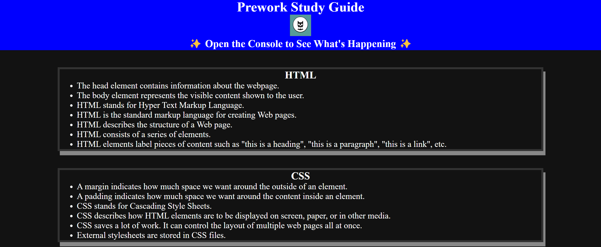

Work Samples
Horiseon Project
Module 1 Challenge of bootcamp to restructure HTML and CSS code for Horiseon Marketing Agency Webpage.
Prework-Study-Guide
This was a Prework-Study-Guide assignment to be done before the start of the UPenn Full Stack Web Dev Bootcamp.
Placeholder For Other Work
This is a temporary description placeholder for a future project that currently does not exist.

Placeholder For Other Work
This is a temporary description placeholder for a future project that currently does not exist.